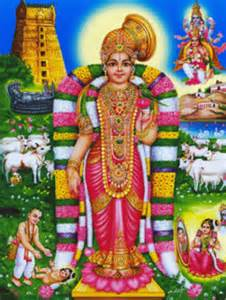

The history of Srivilliputhur centres around the Srivilliputhur Temple, dedicated to Andal (8th century or earlier), the only female Alvar of the 12 Alvar saints of South India. She is credited with the Tamil works of Thirupavai and Nachiar Tirumozhi that are still recited by devotees during the Winter festival season of Margazhi. Andal is known for her unwavering devotion to god Vishnu, the God of the Srivaishnavas. Adopted by her father, the Alvar saint Periyalvar who found her as a baby, Andal avoided earthly marriage, the normal and expected path for women of her culture, to "marry" Vishnu, both spiritually and physically. In many places in India, particularly in Tamil Nadu, Andal is treated more than a saint and as a form of god herself and a shrine for Andal is dedicated in most Vishnu temples.
During the reign of Thirumalai Naikar (1623–1659) and Rani Mangammal (1689–1706), this city became very popular. Thirumalai Nayak renovated the temples of this city. Nayak built a palace similar, but smaller in size to that of Thirumalai Nayakkar Palace in Madurai. Entry to this well preserved historical complex is presently restricted by the Archaeological Department of India which is managing this palace complex. From 1751 to 1756 A.D., Srivilliputhur came under the rule of Nerkattumseval palayakkarar Puli thevar and was a maravarpalayam. Later the Fort of Srivilliputtur was ruled by Periyasami Thevar. Then it fell into the hands of Mohammed Yusuf Khan during 1756. The troops of Yusuf won over the Polygars in the region. When they tried to invade Srivilliputhur, a Brahmin fell from the top of the temple tower as a mark of protest. Though Muslims, the troops retreated at the sight of the shattering brain in front of a Hindu temple might draw further wrath.[7] During 1801, there were battles between polygars in the region and the British. One of the rebels, Sivattaiya Nayak was captured in the town during the same year.[8] During February 1811, the town was suffering from an epidemic. Until 1850, Sri Andal temple was under the care of the king of Trivancore. The British ruled the country till India attained freedom in 1947.

The temple is associated with the life of Andal, who was found under a Tulsi plant in the garden inside the temple by Periazhwar. She is believed to have worn the garland before dedicating it to the presiding deity of the temple. Periazhwar, who later found it, was highly upset and stopped the practise. It is believed Vishnu appeared in his dream and asked him to dedicate the garland worn by Andal to him daily, which is a practise followed during the modern times. It is also believed that Ranganatha of Srirangam Ranganathaswamy temple married Andal, who later merged with him.
The temple has two divisions - the one of Andal located on the Southwest and the second one of Vadapathrasayi on the Northeast direction. A granite wall surrounds the temple, enclosing all its shrines, the garden where Andal is believed to been born and two of its three bodies of water. The rajagopuram, the temple's gateway tower, 192 ft (59 m) tall, is the official symbol of the Government of Tamil Nadu. The Vijayanagar and Nayak kings commissioned paintings on the walls of the shrine of temple, some of which are still present.
Kumbabishekam of the Andal temple is scheduled on 20.01.2016 by TamilNadu Government
Vadapathrasayi is believed to have appeared to Andal, Periazhwar and sages Markandeya and Bhrigu. The temple follows Thenkalai tradition of worship. Six daily rituals and three yearly festivals are held at the temple, of which the Aadipooram festival, the birthday of Andal, celebrated during the Tamil month of Adi (July - August), is the most prominent. The temple is maintained and administered by the Hindu Religious and Endowment Board of the Government of Tamil Nadu.